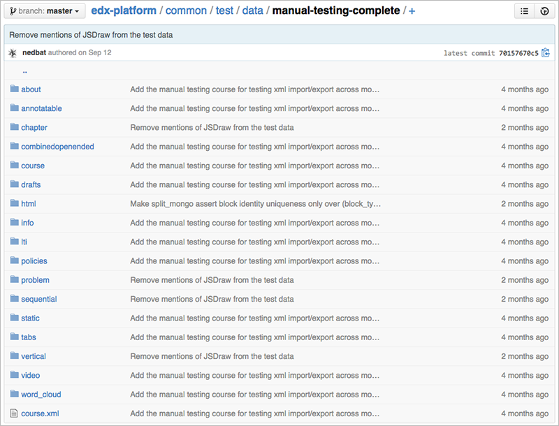

14.1. The Structure of the Manual Testing Course#
This section describes the structure of the Manual Testing course.
For information about how a generic OLX (open learning XML) course is structured, see OLX Course Structure.
For information about how a non-Studio OLX course can be structured, see The Structure of edX-Insider.
Note
The structure and content of the manual testing course can change without corresponding updates being made to this reference guide.
14.1.1. Manual Testing Course and Directory File Structures#
All files and subdirectories that comprise the Manual Testing course are stored in the manual-testing-complete directory in the edx-platform Git repository.
14.1.2. Top-level Directory#
The manual-testing-complete directory in the edx-platform Git repository
contains the course.xml file as well as XBlock and Platform directories.
As a course exported for edX Studio, the course.xml file does not contain
the courseware content directly. All chapters, sequentials, verticals, and
XBlocks are defined in separate files and referenced from their parent files.
The course.xml file contains a single line that references the courseware
structure file in the course directory.
<course url_name="2014" org="ManTestX" course="ManTest1"/>
The value of url_name, 2014, matches the filename of the courseware
structure file, 2014.xml.
14.1.3. The Courseware Structure File#
The courseware structure is defined in the 2014.xml file in the course
directory.
The 2014.xml file specifies advanced settings as attributes of the
course element, and lists the chapters (or sections) that make up the
courseware.
<course advanced_modules="["annotatable",
"combinedopenended", "peergrading", "lti",
"word_cloud"]" display_name="Manual Smoke Test Course 1"
lti_passports="["ims:12345:secret"]"
pdf_textbooks="[{"tab_title": "An Example Paper",
"id": "0An_Example_Paper", "chapters":
[{"url": "/static/1.pdf", "title":
"Introduction "}]}]" show_calculator="true" show_chat="true"
start="2014-06-26T00:00:00Z">
<chapter url_name="a64a6f63f75d430aa71e6ce113c5b4d2"/>
<chapter url_name="d68c2861c10a4c9d92a679b4cfc0f924"/>
<chapter url_name="ab97a6dbfafd48868c36bed4c8c5391d"/>
<chapter url_name="5bb7a5ab824f460580a756a4f347377c"/>
<chapter url_name="ce2fd991d84b4a5ca75350eb8e350627"/>
<chapter url_name="be8a64868f2f460ea490e001a25e588d"/>
<chapter url_name="3d216a50442f4cd5a1d4171c68f13f58"/>
<chapter url_name="a0178ff300514e24829e239604dce12c"/>
<chapter url_name="2df1fe87253549199f30cabb19e14b7c"/>
<chapter url_name="60989ac1589241ed9dbca0f2070276fd"/>
<wiki slug="ManTestX.ManTest1.2014"/>
</course>
For each chapter element, the value of the url_name attribute matches
the name of the XML file in the chapter directory. For example, the first
chapter element’s url_name attribute,
a64a6f63f75d430aa71e6ce113c5b4d2, matches
a64a6f63f75d430aa71e6ce113c5b4d2.xml in the chapter directory.
Learners see the chapters that the course.xml file defines in the LMS on
the Course page in the course navigation pane.

14.1.4. Chapter Files#
The structure of each chapter, or section, in the courseware is defined in the
XML file in the chapter directory.
Each chapter file specifies the sequentials, or subsections, in the chapter. An example follows.
<chapter display_name="New Section 1 - Annotatable">
<sequential url_name="d7d631967807476485aa26ba0c39a992"/>
<sequential url_name="f09502cf408742c2aa3c92705ab1dce7"/>
<sequential url_name="0e86943b2cb54a56a1a14c13da3f388d"/>
<sequential url_name="948737f132254c2aa65f6024edee7e68"/>
<sequential url_name="f9372e3b199a4986a46c8d18e094b931"/>
<sequential url_name="d912a92ed03d4f818661a1636b8a6f9b"/>
</chapter>
For each sequential element, the value of the url_name attribute
matches the name of the XML file in the sequential directory. For example,
the first sequential element’s url_name attribute,
7d631967807476485aa26ba0c39a992, matches
7d631967807476485aa26ba0c39a992.xml in the sequential directory.
Learners see the sequentials that the chapter file defines in the LMS on the Course page in the course navigation pane.

14.1.5. Sequential Files#
The structure of each sequential, or subsection, in the courseware is defined
in the XML file in the sequential directory.
Each sequential file specifies the verticals, or units, in the subsection. An example follows.
<sequential display_name="New Subsection 10.4">
<vertical url_name="e81c7ddcf5434387a2a6163ca973520c"/>
</sequential>
For each vertical element, the value of the url_name attribute
matches the name of the XML file in the vertical directory. For example,
the vertical element’s url_name attribute,
e81c7ddcf5434387a2a6163ca973520c, matches
e81c7ddcf5434387a2a6163ca973520c.xml in the vertical directory.
Learners see the verticals that the sequential file defines in the LMS on the Course page in the unit navigation bar. The following example shows a sequential with one vertical, which has one XBlock.

14.1.6. Vertical Files#
The structure of each vertical, or unit, in the courseware is defined
in the XML file in the vertical directory.
Each vertical file specifies the XBlocks, or components, in the unit. For example, the following vertical contains one problem:
<vertical display_name="checkbox ">
<problem url_name="a473cecce312487a8339995bde24be53"/>
</vertical>
Each vertical element contains a child element for each XBlock in the
vertical.
Learners see the XBlocks that the vertical file defines in the LMS.
For each XBlock, the value of the url_name attribute matches the name of
the XML file in the XBlock directory. The XBlock directory name is specific to
the type of XBlock and matches the XML element name. The following XBlock types
are included in the Manual Testing course.
annotablecombineopenendedhtmlltiproblemvideoword_cloud
14.1.7. Other XBlock Files#
XBlock files contain the actual content learners engage with in the learning management system.
The root element of an XBlock file is the type of XBlock, as well as the parent
directory name. For example, the root element of files in the html
directory is html.
An example of a problem XBlock follows.
<problem display_name="Blank Common Problem" markdown="Capital of France is
Paris: [[false, (true)]] ">
<p>Capital of France is Paris:</p>
<optionresponse>
<optioninput options="('false','true')" correct="true"/>
</optionresponse>
</problem>
Learners see the problem in the vertical (or unit) page as follows.

14.1.8. Platform Directories#
The Manual Testing course includes platform directories to support non-courseware parts of the OLX course. For more information, see edX Platform Directories.